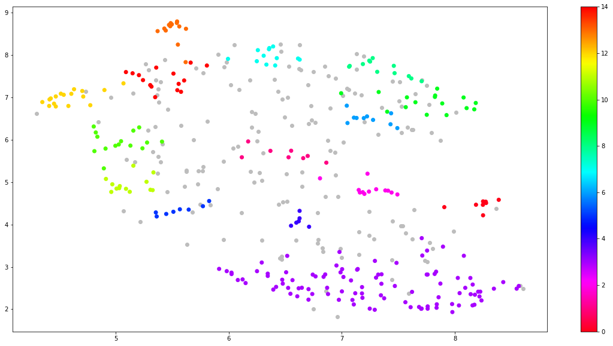

A Taxonomy of Climate Risks with Hierarchical Topic Modelling
Contents
A Taxonomy of Climate Risks with Hierarchical Topic Modelling#
Topic Modelling with BERT#
Embeddings and Dimensionality Reduction#
[ ]:
!pip install sentence-transformers
[ ]:
import pandas as pd
from sentence_transformers import SentenceTransformer, util
climate_discussions = pd.read_csv('climate_discussions.csv').dropna()
model = SentenceTransformer('all-MiniLM-L6-v2')
[32]:
import itertools
merged = list(itertools.chain.from_iterable([i.split('.') for i in climate_discussions['Climate_Discussion'].tolist()]))
merged = [i for i in merged if len(i)>50]
len(merged)
[32]:
429
[33]:
embeddings = model.encode(merged, show_progress_bar = True)
[ ]:
!pip install umap-learn
[34]:
import umap
umap_embeddings = umap.UMAP(n_neighbors = 15,
n_components = 5,
metric = 'cosine').fit_transform(embeddings)
Clustering#
[ ]:
!pip install hdbscan
[45]:
import hdbscan
clusters = hdbscan.HDBSCAN(min_cluster_size = 5,
metric = 'euclidean',
cluster_selection_method = 'eom').fit(umap_embeddings)
[46]:
clusters.labels_
[46]:
array([-1, -1, -1, -1, 12, -1, 11, 12, -1, 14, 6, 14, 10, 0, -1, 4, 3,
3, -1, 0, 0, -1, 0, 14, 12, 5, 9, 3, -1, -1, -1, 1, 7, 9,
-1, 3, 9, 3, 2, -1, -1, 9, 8, -1, 3, -1, 1, -1, 9, -1, -1,
-1, -1, -1, -1, 1, -1, -1, -1, -1, -1, -1, -1, -1, 11, 9, -1, 8,
8, 3, -1, 1, 8, 9, -1, 1, 5, -1, 3, 3, 3, 2, -1, 2, 2,
2, 2, 2, 2, 2, -1, 3, 3, -1, 8, -1, -1, -1, -1, 7, 7, 7,
13, -1, 3, 13, 7, 7, -1, 14, -1, 14, -1, -1, -1, 1, 9, -1, -1,
-1, -1, 3, -1, 14, -1, 8, 12, 10, 10, 10, 10, -1, 3, 3, -1, -1,
12, -1, 10, -1, -1, -1, -1, 3, 3, 3, 10, 6, -1, 12, 10, 12, 10,
11, 3, 3, 3, 3, 3, 3, 3, 3, 3, 3, 3, 3, 3, 3, -1, 11,
3, 3, 3, 0, 3, 3, 9, 9, 8, 9, 2, 4, 7, -1, -1, -1, 13,
13, -1, 3, 5, 4, 3, -1, -1, -1, -1, 3, 3, -1, -1, 3, 3, 11,
-1, 12, 11, 12, 12, 12, 12, -1, -1, -1, 12, -1, -1, 9, 3, 7, 8,
3, 14, 3, -1, -1, -1, -1, -1, -1, 2, 3, 3, -1, 4, 4, -1, -1,
3, 3, 3, 14, -1, -1, -1, 1, 8, 9, 3, 3, -1, 12, 12, 2, -1,
3, -1, 5, -1, -1, 14, 14, 14, 11, 14, -1, -1, 3, 3, 3, 3, -1,
3, -1, 3, 10, 10, 12, 10, 11, 6, -1, -1, 1, -1, -1, -1, -1, 6,
-1, 5, 3, -1, 5, -1, 6, 3, 3, -1, 11, 9, -1, 5, -1, -1, -1,
11, 14, -1, -1, 6, -1, 6, 3, 3, 3, 3, -1, -1, -1, 3, -1, 3,
-1, 3, 3, 3, -1, 0, 10, 14, 6, -1, -1, 6, -1, -1, 3, -1, 7,
-1, -1, 3, -1, 3, 3, 3, 3, 3, -1, 3, -1, 8, 7, 13, 13, 13,
13, 13, 13, 13, 13, -1, 7, -1, 7, 14, 9, -1, 11, 3, -1, 3, 0,
3, 3, 3, -1, 0, -1, -1, -1, -1, -1, -1, -1, -1, 8, -1, 9, -1,
-1, 8, 3, -1, -1, -1, 11, -1, 3, 3, 3, 3, 3, -1, 10, 11, 3,
3, -1, 3, 3, 3, 10, 13, 12, -1, 13, 6, -1, 3, -1, 3, 3, 4,
-1, -1, -1, 5])
[47]:
import matplotlib.pyplot as plt
# Prepare data
umap_data = umap.UMAP(n_neighbors=15, n_components=2, min_dist=0.0, metric='cosine').fit_transform(embeddings)
result = pd.DataFrame(umap_data, columns=['x', 'y'])
result['labels'] = clusters.labels_
[ ]:
# Visualize clusters
outliers = result.loc[result.labels == -1, :]
clustered = result.loc[result.labels != -1, :]
clustered
[51]:
fig, ax = plt.subplots(figsize=(20, 10))
plt.scatter(outliers.x, outliers.y, color='#BDBDBD')
plt.scatter(clustered.x, clustered.y, c=clustered.labels, cmap='hsv_r')
plt.colorbar()
[51]:
<matplotlib.colorbar.Colorbar at 0x7f82965ef910>

Topic Representation#
[ ]:
!pip install keyphrase-vectorizers
[52]:
docs_df = pd.DataFrame(merged, columns = ['Doc'])
docs_df['Topic'] = clusters.labels_
docs_df['Doc_ID'] = range(len(docs_df))
docs_per_topic = docs_df.groupby(['Topic'], as_index = False).agg({'Doc': ' '.join})
[78]:
import numpy as np
from sklearn.feature_extraction.text import CountVectorizer
from keyphrase_vectorizers import KeyphraseCountVectorizer
def c_tf_idf(documents, m, ngram_range=(1, 1)):
count = KeyphraseCountVectorizer(stop_words="english", pos_pattern='<N.*>').fit(documents)
t = count.transform(documents).toarray()
print(t)
w = t.sum(axis=1)
tf = np.divide(t.T, w)
sum_t = t.sum(axis=0)
idf = np.log(np.divide(m, sum_t)).reshape(-1, 1)
tf_idf = np.multiply(tf, idf)
return tf_idf, count
tf_idf, count = c_tf_idf(docs_per_topic.Doc.values, m=len(merged))
[[0 0 0 ... 1 1 0]
[0 0 0 ... 0 0 0]
[0 0 0 ... 0 0 0]
...
[0 0 0 ... 0 0 0]
[0 0 0 ... 0 0 0]
[1 0 0 ... 0 0 0]]
<ipython-input-78-acb6ef6c68f4>:12: RuntimeWarning: divide by zero encountered in true_divide
idf = np.log(np.divide(m, sum_t)).reshape(-1, 1)
<ipython-input-78-acb6ef6c68f4>:13: RuntimeWarning: invalid value encountered in multiply
tf_idf = np.multiply(tf, idf)
[79]:
print(tf_idf)
[[0. 0. 0. ... 0. 0. 0.04970657]
[0. 0. 0. ... 0. 0. 0. ]
[0. 0. 0. ... 0. 0. 0. ]
...
[0.00476281 0. 0. ... 0. 0. 0. ]
[0.00581714 0. 0. ... 0. 0. 0. ]
[0. 0. 0. ... 0. 0. 0. ]]
[ ]:
def extract_top_n_words_per_topic(tf_idf, count, docs_per_topic, n=20):
words = count.get_feature_names_out()
labels = list(docs_per_topic.Topic)
tf_idf_transposed = tf_idf.T
indices = tf_idf_transposed.argsort()[:, -n:]
top_n_words = {label: [(words[j], tf_idf_transposed[i][j]) for j in indices[i]][::-1] for i, label in enumerate(labels)}
return top_n_words
def extract_topic_sizes(df):
topic_sizes = (df.groupby(['Topic'])
.Doc
.count()
.reset_index()
.rename({"Topic": "Topic", "Doc": "Size"}, axis='columns')
.sort_values("Size", ascending=False))
return topic_sizes
top_n_words = extract_top_n_words_per_topic(tf_idf, count, docs_per_topic, n=20)
topic_sizes = extract_topic_sizes(docs_df); topic_sizes.head(10)
[84]:
top_n_words[2]
[84]:
[('[', nan),
('-', nan),
('’d', nan),
('’s', nan),
('e&ps', nan),
('v', nan),
('u', nan),
('%', nan),
('n’t', nan),
('quarter', 0.28858121568155504),
('spend', 0.21894902780558415),
('expenditures', 0.15789146289317857),
('capital', 0.15778898246205958),
('year', 0.14741816808462374),
('cash', 0.1375047811120037),
('flow', 0.1375047811120037),
('capacity', 0.1309417354851152),
('boom', 0.08913907233717672),
('office', 0.08913907233717672),
('charter', 0.08913907233717672)]
BERTopic#
[ ]:
!pip install bertopic
[99]:
from bertopic import BERTopic
vectorizer = KeyphraseCountVectorizer(stop_words = 'english', pos_pattern = '<N.*>')
topic_model = BERTopic(vectorizer_model = vectorizer, diversity = 0.2)
topics, probs = topic_model.fit_transform(merged)
/usr/local/lib/python3.8/dist-packages/bertopic/vectorizers/_ctfidf.py:69: RuntimeWarning:
divide by zero encountered in true_divide
[100]:
topic_model.get_topic_info()
[100]:
| Topic | Count | Name | |
|---|---|---|---|
| 0 | -1 | 98 | -1_fuel_fpl_investment_portfolio |
| 1 | 0 | 120 | 0_carbon_emissions_scope_companies |
| 2 | 1 | 119 | 1_demand_pricing_customers_labor |
| 3 | 2 | 52 | 2_esg_responsibility_sustainability_commitments |
| 4 | 3 | 27 | 3_infrastructure_capital_investment_opportunities |
| 5 | 4 | 13 | 4_aviation_fuel_emissions_planes |
[101]:
topic_model.visualize_topics()
Hierarchical Topic Modelling of Climate Risks#
Hierarchical Topic Modelling#
Uncovering a Taxonomy of Climate Risks from Climate Risks Discussions#
[ ]: